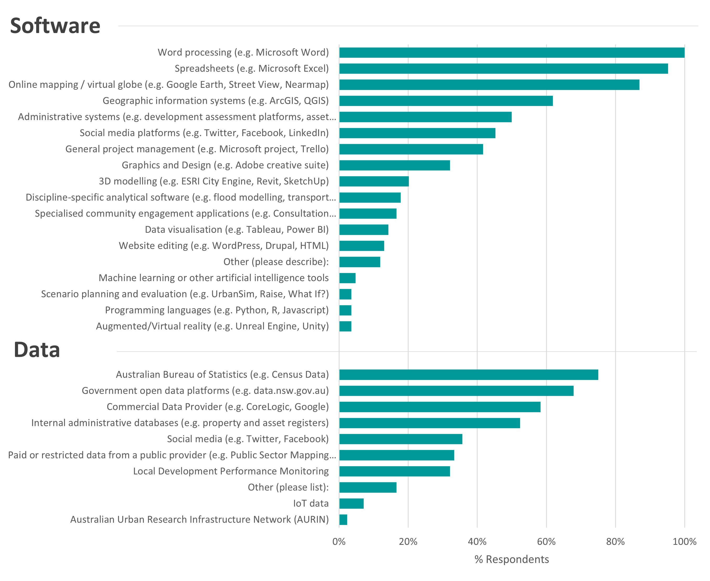
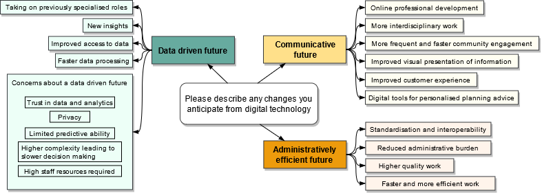
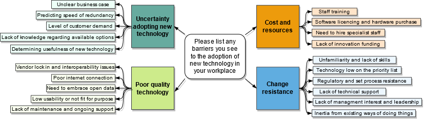

Digital Disruption in Planning - Survey Results of Planners' Perspectives
11 May 2021
In 2019 we conducted a survey of practicing Australian planners to collect their perspectives on technology use in the profession and anticipated change. The results have now been published in a peer-reviewed article in Australian Planner co-authored with Professor Chris Pettit. I would like to share the highlights with you below.
Past years have seen a new wave of digital innovation initiatives in city management and the delivery of government services at large. Urban planning however is frequently viewed as "behind the times" with many of our sister professions in the built environment now boasting relatively established approaches with PropTech in the real-estate and property development industry, computational design in architecture and digital twins in the spatial and surveying industry - to name just a few.
In 2019 we conducted a survey of and workshop with practicing Australian planners to find out:
- How they currently use tech in their day-to-day work,
- What changes they anticipate,
- Any barriers to this change, and;
- How prepared they feel.
The full paper was published last week in the Australian Planner and should freely accessible to all members of the Planning Institute of Australia. A pre-print version of the article is available for download above. We have also created a dashboard to allow for exploration of the survey data. The following provides a summary of ten of the key findings.
1. Planners rely on ‘traditional’ data and software
The Australian Bureau of Statistics was still the number one source of information for practicing planners, followed by government open data platforms with both used by most respondents. On the other hand, only moderate use of social media data was reported whilst IoT data ("internet of things" - an innovation considered key to smart cities initiatives) was used by less than ten percent of respondents. Similarly, the reported use of more novel applications was low including scenario planning, 3D modelling and AR/VR applications, indicating that yet more work may need to be done if planners are to be convinced of their utility in practice.

Data sources and software used by survey respondents in their day to day work
2. Local government planners report using the widest variety of tech
Local government planners reported to be far more likely to use online mapping, GIS, 3D modelling, administrative systems, and 3D modelling software than their state government counterparts.
3. There was little difference in tech use between junior and senior planners
Surprisingly, comparison between respondents with less than 10 years’ experience and more than 10 years’ experience revealed little difference in tech use - perhaps indicating that even if* younger professionals are more familiar with various technologies, that they may not currently be afforded opportunities to apply these skills in their work.
4. Planners anticipate widespread change
Despite reporting limited use of new and novel technologies, most respondents predict significant change to occur to day-to-day planning work arising from digital technology. When asked to describe these changes three dominant themes emerged - a data-driven future where new insights are gleaned from new data sources and computation capabilities; a communicative future where the internet offers instantaneous transfer of information and communication at a distance; and finally, an administratively efficient future where many bureaucratic and administrative functions are automated, such as for simple development approvals.

Summary of free-form text responses
5. There are a wide range of barriers to tech adoption in planning
Responses describing barriers to the adoption of new tech in the workplace paint a complex picture which we summarised under four themes - uncertainty in the adoption of new technology and whether the benefits of implementing a new technology will outweigh the costs before it becomes redundant; poor quality technology including software that is difficult to use or note fit for purpose; costs and resources not just in licencing fees and hardware upgrades but also in the time taken to train staff; and finally change resistance describing problems of general cultural inertia stemming from institutional arrangements, individual reluctance and crucially lack of senior management support.

Summary of free-form text responses
6. Planners have lots of innovative ideas
Planners participating in a workshop were asked to devise technological solutions to common frustrations encountered in their work. They responded with enthusiasm and had little difficulty in devising a range of solutions, from improved data portals to simplified assessment systems, which are detailed at more length in the paper.
7. A lack of basic digital infrastructure may be hindering further innovation
The solutions developed by workshop participants may suggest further reasons for the relatively low adoption of new data-heavy and computationally intensive technology with most frustrations centered around difficulties in simple information retrieval and communication tasks
8. Set-process mindsets may hinder deeper innovation
When asked to outline their day-to-day work it was striking how quickly workshop participants were able to reach a consensus when mapping out how to undertake common planning tasks such as preparing a masterplan, despite working across different organisations. It would be interesting to investigate whether this high subscription to set processes could be a barrier to more widespread and systematic innovation. We know from other digital innovation efforts in government that it is important to take the opportunity to re-evaluate why things are done in certain ways and avoid simply hard-coding existing processes in new automated systems.
9. The workplace is still important to continued professional development
Although if you are reading this article you have probably found it through Twitter or LinkedIn, our results show that for most planners that these are among the least important sources of new information about the latest developments in the industry, with more traditional sources including the workplace, seminars and conferences, alongside web searches, ranked as more commonly used.
10. The results of this survey provide a limited perspective
Not so much a finding as a caution (it also felt unsatisfactory to leave this article at nine) that this survey presents only the views of practicing planners, around 100 people and mostly located in the State of New South Wales in Australia. It could be complemented by further research to gather views from other stakeholders in the process, in particularly the community at large who are often underrepresented in these types of studies.
So, in conclusion it is hoped that the findings of this research provide a practical framework of considerations when it comes to implementing technology in urban planning. These findings demonstrate that, counter to some popular opinion, planners at large are far from oblivious when it comes to the possibilities and expected changes arising from continued improvements to digital technology. Including their perspectives will be necessary if we are to get the best outcomes from this new wave of digital transformation efforts.
Again, for more information, please read the full article here, the pre-print of which is also available for free on my personal website above. We hope it is useful to you, and if so that you will cite the article:
C. Daniel & C. Pettit (2021): Digital disruption and planning - use of data and digital technology by professional planners, and perceptions of change to planning work, Australian Planner, DOI: 10.1080/07293682.2021.1920995
We hope to follow up soon with an international survey to update these findings and gather broader perspectives. Before doing so we would be interested to hear from planning organisations what more they might like to know so please get in touch if you would like to be involved in the design of the next stage! Hit me up on Twitter @ClaireCities or LinkedIn!
*This research included no test of proficiency with digital technology
 @ClaireCities
@ClaireCities